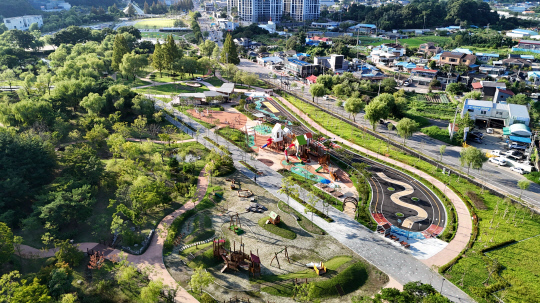
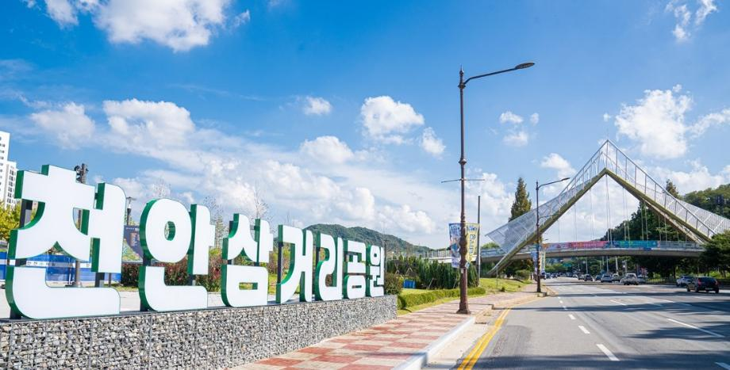
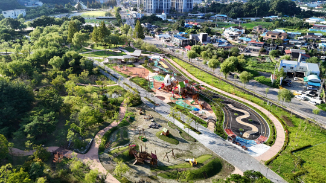
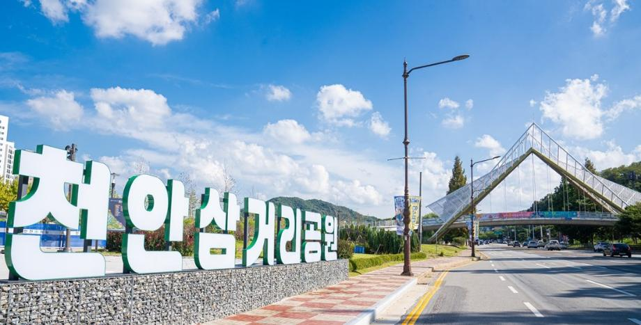

천안을 한 눈에 보는
도시 매핑 프로젝트
이 페이지는 천안의 대표적인 네 공간인 고속터미널 · 삼거리공원 · 독립기념관 · 아우내장터를 하나의 지도 위에 연결하여 제시하는 매핑 프로젝트입니다. 각 장소의 분위기뿐만 아니라 근처 맛집과 주차 / 대중교통 정보까지 함께 정리하였습니다.
아래로 스크롤하며 지도를 함께 살펴보면서 천안을 실제로 걷는 동선을 떠올려 보시기 바랍니다.
- 도시의 구조를 한 눈에 파악
- 장소별 미니 지도와 동선 정보
- 실제 방문을 위한 맛집 · 교통 가이드
천안 전체 지도
프로젝트에서 다루는 네 장소의 상대적인 위치를 3D 스타일의 지도 위에 표시합니다.
천안 고속터미널
천안 고속터미널은 버스 환승 거점이자 쇼핑몰·영화관·카페가 밀집해 있는 천안의 대표 상권입니다. 외지에서 처음 천안에 진입할 때 가장 먼저 마주치는 장소로, ‘천안을 시작하는 관문’으로 볼 수 있습니다.
🍽️ 근처 맛집
- 양포항 천안 신부동점 네이버 카카오 – 터미널·백화점 근처에서 회를 즐기고자 할 때 많이 찾는 해산물 전문 식당입니다.
- 마운트 피쉬테일 네이버 카카오 – 인도·네팔식 커리와 탄두리 요리를 제공하는 이색적인 레스토랑입니다.
- 리틀그리스(Little Greece) 네이버 카카오 – 샐러드와 그리스 요리에 특화된, 분위기 있는 저녁 식사 장소입니다.
🚗 주차 정보
터미널 건물 주차장과 신세계백화점 주차장을 함께 이용할 수 있습니다. 쇼핑을 함께 이용하면 주차 할인이 적용되어 ‘쇼핑 + 식사 + 버스 이동’을 한 번에 해결하기에 적합합니다.
🚌 대중교통
서울·수도권에서 고속·시외버스로 약 1시간 내외가 소요됩니다. 터미널 앞 시내버스 정류장에서 독립기념관·삼거리공원·아우내장터 방면 시내버스를 바로 이용할 수 있습니다.
천안 삼거리공원
천안 삼거리공원은 ‘천안 삼거리 흥타령 축제’로 잘 알려진 공원입니다. 넓은 잔디광장과 산책로, 야외 공연장이 함께 조성되어 있습니다. 시민 축제와 야외 공연이 자주 열리는 공간으로, 계절에 따라 분위기가 크게 달라지는 것이 특징입니다.
🍽️ 근처 맛집
- 삼거리휴게소 일대 식당 네이버 카카오 – 국밥, 정식, 분식 등 드라이브 코스와 함께 방문하기 좋은 식당들이 모여 있습니다.
- 샐러드데이즈 삼거리휴게소점 네이버 카카오 – 가벼운 식사를 원하는 이용자를 대상으로 하는 샐러드 전문점입니다.
- 근처 로컬 한식당들 네이버 카카오 – 공원 외곽 도로를 따라 소규모 한식당이 분포해 있어, 산책 후 간단히 식사하기에 좋습니다.
🚗 주차 정보
공원 주변 공영주차장과 행사장 앞 주차장을 이용할 수 있습니다. 축제 기간에는 임시 주차장과 셔틀버스가 함께 운영되는 경우가 많아, 실제 방문 시에는 행사 안내 페이지를 함께 확인하는 것이 좋습니다.
🚌 대중교통
천안역·고속터미널에서 출발하는 시내버스를 이용하여 ‘삼거리공원’ 또는 인근 정류장에서 하차한 뒤 도보로 약 5~10분 이동하면 도착할 수 있습니다.
 



독립기념관
독립기념관은 일제강점기 독립운동의 역사를 다루는 대규모 역사 박물관입니다. 여러 개의 전시관과 넓은 야외 광장, 산책로가 함께 구성되어 있어 하루 코스로 방문해도 충분한 규모를 자랑합니다.
🍽️ 근처 맛집
🚗 주차 정보
대형 주차장이 잘 갖추어져 있고, 승용차 기준 비교적 저렴한 요금으로 장시간 머물러도 부담이 적습니다. 주말·공휴일에는 외지 관광객이 많기 때문에 다소 이른 시간에 도착하는 것이 좋습니다.
🚌 대중교통
천안 고속터미널과 천안역에서 독립기념관 방면 시내버스를 이용하면 환승 없이 이동할 수 있습니다. 버스 정류장 이름도 ‘독립기념관’으로 표기되어 있어 찾기 수월한 편입니다.
아우내장터 · 유관순 열사 유적지
아우내장터는 3·1운동 당시 만세 시위가 전개되었던 장소이자, 현재까지 5일장이 열리는 전통 시장입니다. 인근에는 유관순 열사 유적지가 위치해 있어 역사 교육, 시장 탐방, 병천순대를 함께 즐길 수 있는 동선을 형성합니다.
🍽️ 근처 맛집
🚗 주차 정보
장터 주변 공영주차장과 병천순대 골목 인근 주차 공간을 이용할 수 있습니다. 장날에는 혼잡도가 높아질 수 있으므로, 독립기념관 방문과 연계하여 동선을 계획하면 보다 효율적으로 이동할 수 있습니다.
🚌 대중교통
천안 고속터미널·천안역에서 병천 방면 시내버스를 이용하면 ‘아우내장터(아우내시장)’ 정류장에서 하차할 수 있습니다. 독립기념관에서 다시 버스로 이동하여 이어서 방문하는 코스로도 많이 이용됩니다.